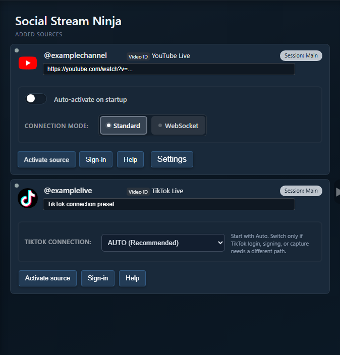

Start Simple
Add TikTok in the desktop app and leave the preset on Auto unless you are troubleshooting a specific failure.

Mode Picker
| Mode | Use When | Watch For |
|---|---|---|
| Auto | Normal first setup. | The app may move through fallback states. |
| Standard | You need visible page capture or manual login/verification. | Redirects, CAPTCHA, hidden chat, or wrong live URL. |
| Local Signer | You need app-native reading or reply-support paths. | TikTok app session/cookies must be valid. |
| Polling | Compatibility fallback when socket/signing paths fail. | Fewer/richer events than preferred connectors. |
| Proxy/custom signing | Advanced setup with provider/API key requirements. | Provider limits, room ID, signing errors, and rate limits. |
What To Collect When It Fails
- Desktop app version and whether beta mode is enabled.
- TikTok preset/mode currently selected.
- Exact app status text or error message.
- Whether the account is signed into TikTok inside the app.
- Whether chat is visible on the live page in Standard mode.
- Whether the dock receives anything before OBS is tested.
Supported Sites Check
For basic browser-extension TikTok setup, use the public TikTok setup note first.

Common Fixes
- Auto fails: try Standard to confirm the visible page and login work.
- Standard redirects: reveal the capture page, check the username/live URL, and complete TikTok verification if prompted.
- Replies fail: check TikTok session/cookies and whether the current mode supports send-back.
- Duplicate or missing messages: close duplicate TikTok source windows/tabs and test one mode at a time.
Related: TikTok guide and Standalone app modes.